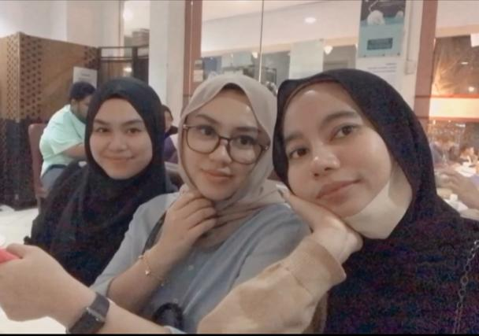

Papa. Mohd Khalid. My foster father on his birthday at Serai Empire
Mama. Aidawati. My foster mother during raya celebration last year

Kaklong and Isya. Adzreen Khalida and Adzrisya Khalida. My sweet sister
Me, Isya, kaklong, Mama and little brother Daniel on his birthday.
Yes i am only their foster child and siblings.
But these people means the world for me.
They are the charming florist that makes my soul blossom.
Life is a mess and i can say.. lonely. before i met them.
But now, whatever i do, i'll think of them. As they are the reason i keep on fighting.
I can't imagine how my life will be without them. And i hope Allah will take me before them, as i can't bear to lose any of them.